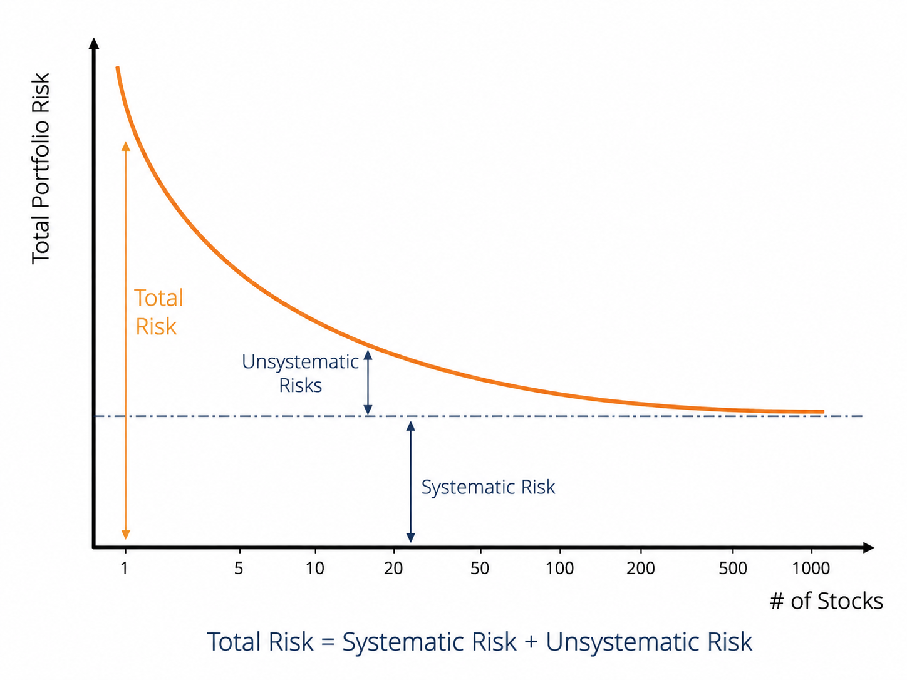
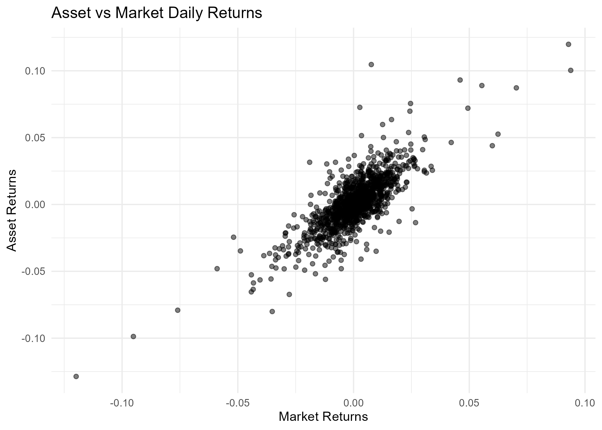
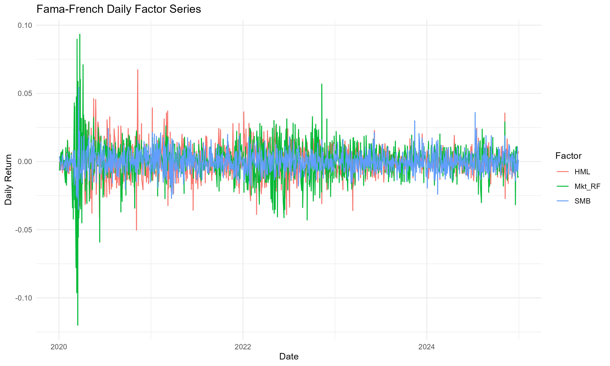
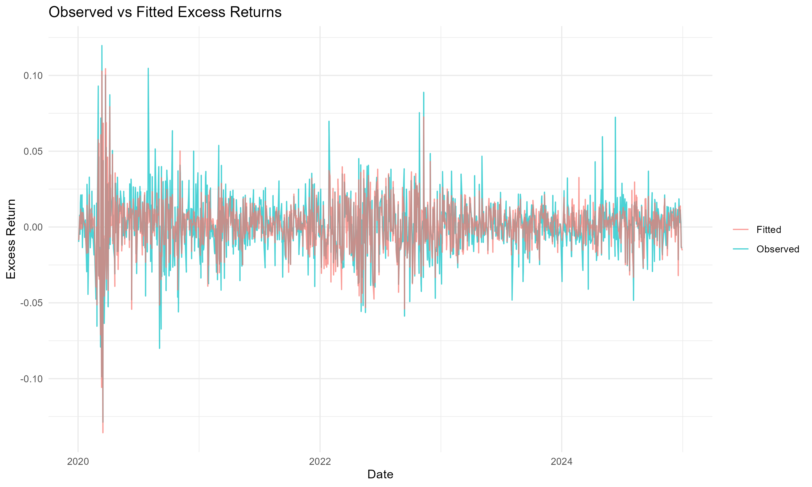
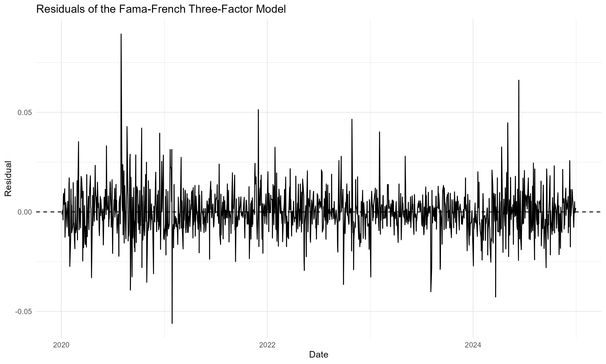
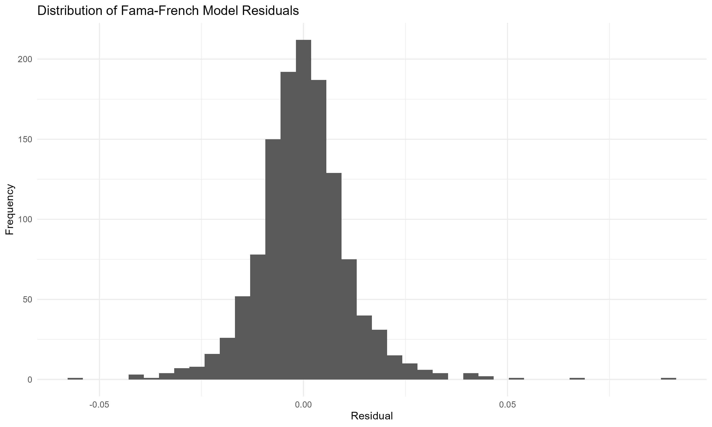
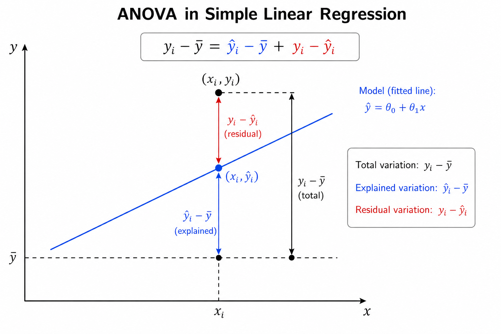

1 CAPM and Fama–French Models
This project studies how classical and multi-factor asset pricing models explain the relationship between systematic risk and expected return. Using historical market data, the analysis evaluates the assumptions, explanatory power, and empirical limitations of the CAPM and Fama–French frameworks through regression-based factor modeling.
1.1 Problem Definition
This project evaluates how asset pricing models—from the traditional CAPM to the multi-factor extensions of Fama and French—formalise the relationship between risk and expected return. In practice, an investor faced with a price signal must determine whether the potential return justifies the associated risk. Doing this effectively means discounting uncertain future cash flows back to present value, which requires a reliable discount rate. The core question is straightforward: what minimum return should be demanded from an asset given its specific risk profile?
Getting this right is critical for asset valuation, portfolio construction, and fund performance evaluation. Without a structured framework, investment decisions often default to guesswork or oversimplified rules of thumb—such as chasing past returns or assuming that any form of risk automatically deserves a premium. Modern financial theory offers a more rigorous perspective: the market does not reward idiosyncratic or stock-specific risk, since it can be diversified away. Only systematic risk warrants a higher expected return. This principle is what separates the CAPM from more naive approaches and serves as the foundation for multi-factor models.
Key decisions—ranging from efficient capital allocation to identifying market mispricings—rely heavily on these models. If an asset offers an expected return above what its systematic risk predicts, it may indicate undervaluation. However, the real-world challenge is methodological: true expected returns are unobservable. Relying on historical data introduces noise, sample-period sensitivity, and specification errors. Furthermore, the CAPM compresses all systematic risk into a single factor (the market portfolio), a simplification that empirical evidence has repeatedly challenged.
The Fama–French models attempt to address this limitation by capturing additional dimensions of systematic risk, including size, value, profitability, and investment patterns. From a data science perspective, this project explores how these models are constructed, tests their underlying assumptions, and evaluates how well they fit empirical data. The final output is a comparative analysis of the models’ explanatory power and practical limitations when confronted with real-world financial data that rarely behaves as textbook theory predicts.
1.2 Modeling Approach
To approach the problem of asset valuation, this project is grounded on two fundamental principles of finance. The first is the time value of money: a dollar today is worth more than a dollar tomorrow because it can be invested immediately and start generating returns. The second is risk aversion: an uncertain cash flow is only attractive if it offers additional compensation relative to a risk-free alternative. Together, these principles reflect the two central variables underlying any financial valuation problem: time and risk.
Under this framework, the valuation of an asset can be understood as the present value of an uncertain future cash flow:
\[ PV = \left( \frac{1}{1 + r_t} \right)^t \mathbb{E}[X_t] \tag{1.1}\]
Here, \(PV\) represents the expected present value of a future cash flow \(X_t\) received at time \(t\), while \(r_t\) denotes the discount rate associated with risk and the opportunity cost of capital. The fundamental challenge for the investor is that this discount rate is not known in advance. In other words, the key question is how much return should be required to compensate for the level of risk being taken. This problem provides the conceptual motivation for the Capital Asset Pricing Model (CAPM) and its multifactor extensions.
Since future returns are uncertain, this project models them as random variables. A practical way to characterize them is through their expected value, representing the anticipated average return, and their volatility, which measures the dispersion of outcomes around that average. This mean-variance framework, originally developed by Harry Markowitz in modern portfolio theory, shows that total portfolio risk can be reduced by combining assets whose returns do not move exactly in the same way [1]. The intuition is straightforward: through diversification, part of the individual fluctuations of each asset tends to offset one another.
However, diversification has an observable practical limit. As portfolios are constructed with an increasing number of assets, total volatility initially falls rapidly but eventually stabilizes around a lower bound. As illustrated in Figure 1.1, this behavior reveals the existence of two distinct components of risk. On the one hand, idiosyncratic or diversifiable risk, which is associated with firm-specific events and can largely be eliminated through diversification. On the other hand, systematic risk, which is linked to broader macroeconomic and market-wide movements and therefore persists even in highly diversified portfolios.

This distinction has a fundamental implication for asset pricing. In a competitive market, rational investors should not expect compensation for taking risks that can be eliminated at virtually no cost through diversification. As a result, the market only rewards exposure to systematic risk. This idea forms the conceptual foundation of the CAPM, which states that the expected risk premium of an asset should be proportional to the expected risk premium of the market [2] [3]:
\[ \mathbb{E}[r_i] - r_f = \beta_i \left( \mathbb{E}[r_m] - r_f \right) \tag{1.2}\]
In this expression, \(\mathbb{E}[r_i]\) represents the expected return of asset \(i\), \(r_f\) is the risk-free rate, and \(\mathbb{E}[r_m]\) corresponds to the expected return of the market portfolio. The parameter \(\beta_i\) measures the sensitivity of the asset to market fluctuations and summarizes its exposure to systematic risk.
From a modeling perspective, the estimation of beta can be interpreted as a simple linear regression between asset returns and market returns [4]. In this project, the CAPM is implemented precisely under this framework, using simple linear regression to estimate the market exposure of different assets and analyze the relationship between systematic risk and expected return.
Despite its conceptual simplicity and historical importance, the CAPM assumes that the entire structure of systematic risk can be summarized by a single factor: the market itself. Empirical evidence, however, suggests that certain firm characteristics — such as company size or the relationship between book value and market value — capture persistent return patterns that the CAPM does not fully explain. These observations motivated the development of the multifactor models proposed by Fama and French [5] [6].
In this project, these extensions are implemented using multiple linear regression. The three-factor model can be expressed as:
\[ \mathbb{E}[r_i] - r_f = \alpha + \beta_{mkt} (\mathbb{E}[r_m] - r_f) + \beta_{smb} \cdot \text{SMB} + \beta_{hml} \cdot \text{HML} + \varepsilon \tag{1.3}\]
where \(\text{SMB}\) (Small Minus Big) measures the excess return of small-cap stocks relative to large-cap stocks, while \(\text{HML}\) (High Minus Low) captures the return differential between value and growth stocks [7] [8].
From a modeling perspective, the transition from the CAPM to the Fama–French three-factor model can be interpreted as moving from a simple linear regression to a multiple linear regression framework, incorporating additional explanatory variables to capture dimensions of systematic risk that a single-factor model cannot fully represent.
The main objective of the project is not simply to compare statistical goodness-of-fit metrics, but to understand how different economic factors contribute to the generation of returns in financial markets and to evaluate how effectively models of different complexity levels represent that underlying process.
1.3 Methodology and Implementation
1.3.1 Data Collection and Preprocessing
The analysis uses daily adjusted closing prices obtained from Yahoo Finance for both Apple Inc. (AAPL) and the S&P 500 index (^GSPC). The S&P 500 is used as a proxy for the market portfolio within the CAPM framework.
The selected period spans from January 2020 to December 2024, providing a multi-year sample that includes different market conditions and volatility regimes. Adjusted prices are used in order to account for corporate actions such as stock splits and dividend adjustments when available.
After downloading the data, both time series are merged into a single dataset and aligned by trading date. Missing observations are removed prior to return calculation.
The price series are initially inspected to verify data consistency and to obtain a preliminary view of the market dynamics during the analyzed period.

Daily simple returns are then computed from the adjusted closing prices. These returns constitute the main variables used throughout the regression analysis.
Before estimating the model, the relationship between asset and market returns is visually explored through a scatter plot. As shown in Figure 1.3, the data already suggest a positive linear relationship between Apple returns and market returns, supporting the use of a linear regression framework for the CAPM estimation.

1.3.2 CAPM Implementation
Following the theoretical formulation introduced in Equation 1.2, the CAPM is implemented through a simple linear regression in which the daily returns of Apple Inc. are modeled as a function of the daily returns of the market portfolio.
For simplicity, the implementation presented here uses raw daily returns without explicitly incorporating a risk-free rate. Under this approximation, the model estimates the linear sensitivity of the selected asset relative to market movements.
The estimated regression coefficients are summarized below.
Table 1.1 Estimated CAPM regression coefficients for Apple Inc. using the S&P 500 as the market proxy.
The estimated market beta is approximately \(\beta = 1.173257\), indicating that Apple exhibited higher sensitivity to market fluctuations than the S&P 500 during the analyzed period. Under the CAPM interpretation, this coefficient suggests that, on average, Apple returns moved approximately \(17\%\) more aggressively than the market portfolio in response to market variations.
Additional model diagnostics are reported below.
Table 1.2 Diagnostic statistics associated with the CAPM linear regression model.
The estimated beta coefficient is also statistically significant, with a large associated \(t\)-statistic and a near-zero \(p\)-value. Similarly, the overall regression presents a large \(F\)-statistic, supporting the existence of a statistically meaningful linear relationship between Apple returns and market returns during the analyzed period.
The estimated coefficient of determination of approximately \(R^2 = 0.625\) indicates that the market factor alone explains a substantial fraction of the observed variability in Apple daily returns during the selected period. Nevertheless, a significant portion of the variability remains unexplained, motivating the consideration of multifactor extensions beyond the single-factor CAPM specification.
The fitted linear relationship between asset and market returns is illustrated in Figure 1.4.

Additional implementation details are available in the companion Quarto notebook here. The corresponding Python notebooks associated with this project are also available in the repository .
1.3.3 Fama–French Three-Factor Model Implementation
To extend the single-factor CAPM specification, the Fama–French three-factor model introduced in Equation 1.3 was estimated using ordinary least squares (OLS) regression. In addition to the market excess return factor, the model incorporates two additional systematic risk factors associated with firm size (SMB) and relative valuation (HML).
The implementation combines daily adjusted closing prices for Apple Inc. (AAPL) obtained from Yahoo Finance with the daily Fama–French factor dataset developed by Kenneth French. The final modeling dataset contains 1,256 daily observations covering the period from January 2020 to December 2024. The average daily excess return of Apple over the sample period was approximately \(0.11\%\), with a daily standard deviation close to \(2.0\%\).
Additional implementation details are available in the companion Quarto notebook here. The corresponding Python notebooks associated with this project are also available in the repository .
Figure 1.5 displays the behavior of the three explanatory factors over time. The series exhibit substantial short-term variability, particularly during periods of market stress such as the early stages of the COVID-19 pandemic in 2020. The SMB factor shows the highest volatility among the three factors during this period, reflecting the stronger sensitivity of small-cap firms to abrupt changes in market conditions.

The estimated regression coefficients are summarized below.
Table 1.3 Estimated Fama–French three-factor regression coefficients for Apple Inc.
The estimated market beta is approximately \(\beta_{mkt} = 1.163\), indicating that Apple exhibits a stronger sensitivity to systematic market movements than the market portfolio itself. The coefficients associated with the size and value factors are both negative and statistically significant. The negative loading on SMB suggests that Apple behaves more similarly to large-cap firms than to small-cap firms, which is consistent with its market capitalization and dominant position within the technology sector. Likewise, the negative HML exposure indicates characteristics more closely aligned with growth-oriented firms rather than value stocks.
The estimated intercept term (\(\alpha \approx 0.00046\)) is positive but not statistically significant at conventional significance levels (\(p \approx 0.155\)), suggesting that, after accounting for the three systematic risk factors, the model does not provide strong evidence of abnormal excess returns during the analyzed period.
The overall regression fit improved relative to the single-factor CAPM specification. The coefficient of determination increased to approximately \(R^2 = 0.678\), indicating that the three-factor model explains nearly \(68\%\) of the variability observed in Apple excess returns. The F-statistic associated with the regression is also highly significant, supporting the joint explanatory power of the selected factors.
Table 1.4 Diagnostic statistics associated with the Fama–French three-factor regression model.
Figure 1.6 compares the observed excess returns against the fitted values generated by the regression model. The fitted series captures a substantial fraction of the short-term dynamics of Apple returns, although large residual fluctuations remain during periods of elevated volatility.

The residual series displayed in Figure 1.7 remains approximately centered around zero throughout the analyzed period, without obvious long-term structural drift. However, clusters of higher residual volatility are still visible during stressed market conditions, indicating that a portion of the variability remains unexplained even after incorporating the additional systematic factors.

Finally, the residual distribution shown in Figure 1.8 exhibits a roughly symmetric shape centered near zero, although moderate tail behavior remains visible. This behavior is consistent with the presence of occasional large market movements that are not fully captured by the linear factor structure.

1.4 Results, Discussion, and Limitations
The empirical results obtained from both the CAPM and the Fama–French three-factor model provide a useful comparison between single-factor and multifactor approaches to asset pricing. Although both models capture an important fraction of the variability observed in Apple excess returns, the inclusion of additional systematic risk factors in the Fama–French specification produces a measurable improvement in explanatory performance.
1.4.1 Comparative Analysis
The CAPM estimation produced a market beta close to \(\beta \approx 1.17\), indicating that Apple exhibits a level of systematic risk slightly higher than that of the overall market portfolio. The market factor alone explained approximately \(62.5\%\) of the variability in Apple excess returns over the analyzed period, resulting in an estimated coefficient of determination of approximately \(R^2 = 0.625\).
After incorporating the size (SMB) and value (HML) factors, the explanatory power of the regression increased to approximately \(R^2 = 0.678\). Although the increase in explanatory performance is moderate, the multifactor specification captures an additional fraction of return variability that remains unexplained under the single-factor CAPM framework.
The estimated market beta remained relatively stable across both models, suggesting that market risk continues to represent the dominant systematic component driving Apple returns. However, the additional factor loadings provide further insight into the firm’s structural characteristics. The negative exposure to the size factor indicates that Apple behaves more similarly to large-cap firms than to smaller companies, while the negative loading associated with the value factor reflects characteristics commonly associated with growth-oriented firms.
From a statistical perspective, both models produced highly significant overall regressions according to their respective F-statistics. Nevertheless, the Fama–French specification generated lower residual variability and a modest improvement in fitted return dynamics, particularly during periods of elevated market volatility.
The comparison between observed and fitted excess returns also suggests that the multifactor specification is better able to reproduce short-term return fluctuations than the CAPM alone. However, significant residual movements remain visible in both models, indicating that a substantial fraction of the variability in daily equity returns cannot be fully captured through linear factor structures alone.
Overall, the empirical results support the interpretation that the Fama–French three-factor model provides a richer and more flexible representation of systematic risk exposures relative to the standard CAPM specification. At the same time, the relatively modest improvement in explanatory power also highlights the dominant role played by market-wide risk in large-cap technology firms such as Apple.
1.4.2 Model Limitations
Despite their widespread use in financial economics, both the CAPM and the Fama–French three-factor model rely on simplifying assumptions that limit their ability to fully explain observed market behavior.
First, both models assume linear relationships between excess returns and systematic risk factors. In practice, financial markets frequently exhibit nonlinear dynamics, volatility clustering, structural breaks, and regime-dependent behavior that cannot be fully represented within a static linear regression framework.
Second, the analysis relies on historical daily observations and therefore assumes that the estimated factor sensitivities remain relatively stable throughout the selected time horizon. However, the relationship between individual assets and systematic risk factors may evolve over time as market conditions, macroeconomic environments, or firm-specific characteristics change.
An additional limitation arises from the selection of explanatory factors themselves. Although the Fama–French specification extends the CAPM by incorporating size and value effects, many additional sources of systematic risk have been proposed in the literature, including profitability, investment, momentum, liquidity, and volatility-related factors. Consequently, the three-factor model should not be interpreted as a complete description of equity return dynamics.
The analysis also focuses exclusively on a single large-cap technology company. While Apple represents an interesting case study due to its market relevance and liquidity, the estimated coefficients and model diagnostics cannot be directly generalized to other sectors, asset classes, or market environments without additional empirical validation.
Finally, both models are estimated under the assumption that historical relationships provide meaningful information regarding future risk-return behavior. As in most empirical financial applications, this assumption may fail under changing market conditions, particularly during periods of financial stress or structural economic transitions.
Despite these limitations, the CAPM and Fama–French frameworks continue to provide valuable benchmark models for understanding systematic risk exposures, comparing relative asset sensitivities, and constructing interpretable factor-based representations of financial returns.
1.5 Technical Appendix (Optional)
This appendix provides a compact technical background for the regression models used in this project. The main body of the chapter focuses on the financial interpretation of the CAPM and Fama-French models, while this appendix summarizes the statistical structure underlying their empirical estimation.
The CAPM specification can be interpreted as a simple linear regression model, where the excess return of an asset is explained by the excess return of the market portfolio. In contrast, the Fama-French three-factor model extends this idea to a multiple linear regression setting, where asset excess returns are explained by a set of risk factors rather than by the market factor alone.
The purpose of this appendix is not to provide a complete treatment of linear regression or statistical learning. Instead, it collects the main concepts needed to understand how the models were estimated, how the coefficients should be interpreted, and how goodness-of-fit and statistical significance measures relate to the empirical results discussed in the project. The presentation follows standard treatments of linear regression and statistical learning [9] [10] [11] [12] [13] [14].
1.5.1 Simple Linear Regression and the CAPM Model
As discussed previously in Equation 1.2, the CAPM establishes a linear relationship between the expected excess return of an asset and the expected excess return of the market portfolio. From a statistical perspective, this relationship can be interpreted as a simple linear regression model of the form
\[ y_i = \theta_0 + \theta_1 x_i + \varepsilon_i \tag{1.4}\]
where \(\theta_0\) represents the intercept, \(\theta_1\) the slope coefficient, and \(\varepsilon_i\) an unobservable random error associated with observation \(i\).
Under this interpretation, the empirical CAPM specification can be written as
\[ r_i - r_f = \alpha + \beta(r_m - r_f) + \varepsilon \tag{1.5}\]
where the excess return of the asset plays the role of the response variable and the excess return of the market portfolio acts as the predictor variable. In this setting, \(\alpha\) corresponds to the intercept term, while \(\beta\) measures the sensitivity of the asset return to market movements.
From the perspective of the CAPM, the intercept term \(\alpha\) is expected to be equal to zero, implying that expected excess returns are fully explained by exposure to market risk through the coefficient \(\beta\). Consequently, testing whether \(\alpha\) differs significantly from zero provides a practical way to evaluate the empirical consistency of the model.
1.5.1.1 Ordinary Least Squares Estimation
The parameters of the regression model are estimated by minimizing the discrepancy between the observed data and the fitted regression line. In ordinary least squares (OLS), this discrepancy is quantified through the residual sum of squares (RSS), defined as
\[ \mathrm{RSS} = \sum_{i=1}^{N} (y_i - \hat{y}_i)^2 = \sum_{i=1}^{N} (y_i - \theta_0 - \theta_1 x_i)^2 \tag{1.6}\]
where each residual represents the difference between an observed value and the value predicted by the model.
Figure 1.9 illustrates the geometric interpretation of the residuals in simple linear regression. The ordinary least squares estimator selects the parameters that minimize the squared residual distances between the observations and the fitted regression line.

The ordinary least squares estimators are obtained by minimizing Equation 1.6 with respect to the model parameters. Since the RSS is a convex quadratic function of \(\theta_0\) and \(\theta_1\), the solution can be obtained by setting the gradient equal to zero. The convexity of the RSS follows from the positive definiteness of the associated Hessian matrix, ensuring that the stationary point corresponds to a unique global minimum.
The resulting estimators are given by
\[ \hat{\theta}_1 = \frac{ \sum_{i=1}^{N} (x_i - \bar{x})(y_i - \bar{y}) }{ \sum_{i=1}^{N} (x_i - \bar{x})^2 } = \frac{ \mathrm{Cov}(x,y) }{ \mathrm{Var}(x) } \tag{1.7}\]
and
\[ \hat{\theta}_0 = \bar{y} - \hat{\theta}_1 \bar{x} \tag{1.8}\]
Equation 1.7 shows that the slope estimator can be interpreted as the ratio between the covariance of \(x\) and \(y\) and the variance of \(x\). Consequently, the estimated slope increases when both variables tend to move together and decreases when their linear relationship weakens. In the context of empirical asset pricing, this interpretation leads naturally to the CAPM market beta, which can be viewed as the ordinary least squares estimator obtained by regressing the excess return of an asset against the excess return of the market portfolio. Under this interpretation, the CAPM beta measures the linear sensitivity of the asset return to market movements in the least-squares sense.
1.5.1.2 Residual Analysis and Model Assumptions
Once the regression coefficients have been estimated, the residuals provide information about the portion of the variability that is not explained by the model. For each observation, the residual is defined as
\[ e_i = y_i - \hat{y}_i \tag{1.9}\]
where \(\hat{y}_i\) denotes the predicted value obtained from the fitted regression model.
A distinction should be made between residuals and random errors. Residuals correspond to observable deviations between the fitted model and the data, whereas the random errors \(\varepsilon_i\) introduced in Equation 1.4 represent the unobservable stochastic component assumed by the statistical model.
Classical linear regression assumes that the random errors are independent, centered around zero, and have constant variance. Under these assumptions,
\[ \varepsilon_i \sim N(0,\sigma^2) \tag{1.10}\]
where \(\sigma^2\) denotes the variance of the error term.
The assumption of constant variance is commonly referred to as homoscedasticity and can be expressed as
\[ \mathrm{Var}(\varepsilon_i) = \sigma^2 \tag{1.11}\]
for all observations. When the variance of the errors changes across observations, the model is said to exhibit heteroscedasticity, which may affect the reliability of confidence intervals, hypothesis tests, and statistical inference.
Although these assumptions are rarely satisfied exactly in real financial data, they provide the statistical framework underlying ordinary least squares estimation and the interpretation of the inferential quantities discussed in the following sections.
1.5.1.3 Confidence Intervals and Standard Errors
The regression coefficients estimated through ordinary least squares are subject to sampling variability. Consequently, point estimates alone do not provide information about the uncertainty associated with the estimated parameters. This uncertainty is commonly quantified through standard errors and confidence intervals.
Under the assumptions introduced previously, the variance of the random error term can be estimated from the residuals through the residual standard error (RSE), defined as
\[ \mathrm{RSE} = \sqrt{ \frac{ \mathrm{RSS} }{ N - 2 } } \tag{1.12}\]
where \(N\) denotes the number of observations and the subtraction of two degrees of freedom reflects the estimation of the intercept and slope coefficients.
The standard errors associated with the regression coefficients are given by
\[ \mathrm{SE}(\hat{\theta}_1) = \sqrt{ \frac{ \sigma^2 }{ \sum_{i=1}^{N} (x_i - \bar{x})^2 } } \tag{1.13}\]
and
\[ \mathrm{SE}(\hat{\theta}_0) = \sqrt{ \sigma^2 \left[ \frac{1}{N} + \frac{ \bar{x}^2 }{ \sum_{i=1}^{N} (x_i - \bar{x})^2 } \right] } \tag{1.14}\]
where \(\sigma^2\) is typically replaced in practice by the estimator introduced in Equation 1.12.
These expressions show that the uncertainty associated with the estimated coefficients depends on both the residual variability and the dispersion of the predictor variable. In particular, the standard error of the slope coefficient decreases as the variability of \(x\) increases, leading to more stable estimates of the linear relationship.
Confidence intervals provide a range of plausible values for the regression coefficients. Under approximate normality assumptions, a \(95\%\) confidence interval for a parameter \(\theta\) can be written as
\[ \hat{\theta} \pm 2 \cdot \mathrm{SE}(\hat{\theta}) \tag{1.15}\]
indicating the range within which the true parameter value is expected to lie with approximately \(95\%\) confidence.
1.5.1.4 Hypothesis Testing and Statistical Significance
Beyond estimating the regression coefficients, it is often important to evaluate whether the observed linear relationship is statistically significant. In simple linear regression, this is commonly assessed through hypothesis testing on the slope coefficient.
The null and alternative hypotheses are given by
\[ \begin{cases} H_0 : \theta_1 = 0 \\ H_1 : \theta_1 \neq 0 \end{cases} \tag{1.16}\]
Under the null hypothesis, the predictor variable does not contribute to explaining the variability of the response variable, implying the absence of a linear relationship between \(x\) and \(y\).
The statistical significance of the estimated slope coefficient can be evaluated through the t-statistic,
\[ t = \frac{ \hat{\theta}_1 }{ \mathrm{SE}(\hat{\theta}_1) } \tag{1.17}\]
which measures the magnitude of the estimated coefficient relative to its standard error.
The corresponding p-value quantifies the probability of observing a statistic at least as extreme as the one obtained under the null hypothesis. Small p-values provide evidence against \(H_0\), suggesting that the predictor variable contributes significantly to the regression model.
In the context of the CAPM, hypothesis testing is particularly relevant for evaluating whether the estimated market exposure coefficient differs significantly from zero and whether the intercept term is statistically consistent with the theoretical prediction of \(\alpha = 0\).
1.5.1.5 Analysis of Variance (ANOVA)
The variability of the response variable can be decomposed into a component explained by the regression model and a residual component associated with unexplained variability. In simple linear regression, this decomposition is expressed as
\[ y_i - \bar{y} = (\hat{y}_i - \bar{y}) + (y_i - \hat{y}_i) \tag{1.18}\]
which separates the total deviation of each observation into an explained component and a residual component.
Figure 1.10 illustrates the geometric interpretation of this decomposition in the context of simple linear regression.

Summing over all observations leads to the classical ANOVA decomposition
\[ \mathrm{TSS} = \mathrm{MSS} + \mathrm{RSS} \tag{1.19}\]
where
\[ \mathrm{TSS} = \sum_{i=1}^{N} (y_i - \bar{y})^2 \tag{1.20}\]
represents the total variability of the response variable,
\[ \mathrm{MSS} = \sum_{i=1}^{N} (\hat{y}_i - \bar{y})^2 \tag{1.21}\]
corresponds to the variability explained by the regression model, and
\[ \mathrm{RSS} = \sum_{i=1}^{N} (y_i - \hat{y}_i)^2 \tag{1.22}\]
measures the unexplained residual variability.
Dividing each sum of squares by its associated degrees of freedom leads to the corresponding mean squares. In simple linear regression, the mean model square and the mean residual square are given by
\[ \mathrm{MMS} = \mathrm{MSS} \tag{1.23}\]
and
\[ \mathrm{MSR} = \frac{ \mathrm{RSS} }{ N - 2 } \tag{1.24}\]
respectively.
These quantities allow the construction of the F-statistic,
\[ F = \frac{ \mathrm{MMS} }{ \mathrm{MSR} } \tag{1.25}\]
which compares the variability explained by the regression model with the unexplained residual variability. Large values of the F-statistic suggest that the regression model explains a substantial fraction of the observed variability relative to the residual noise.
1.5.1.6 Coefficient of Determination (\(R^2\))
Another commonly used measure in linear regression is the coefficient of determination, denoted by \(R^2\). This statistic quantifies the proportion of the total variability in the response variable that is explained by the regression model.
Using the ANOVA decomposition introduced in Equation 1.19,
\[ \mathrm{TSS} = \mathrm{MSS} + \mathrm{RSS} \]
the coefficient of determination can be written as
\[ R^2 = \frac{ \mathrm{MSS} }{ \mathrm{TSS} } = 1 - \frac{ \mathrm{RSS} }{ \mathrm{TSS} } \tag{1.26}\]
Larger values of \(R^2\) indicate that the model explains a greater fraction of the observed variability in the data. In particular, \(R^2 = 1\) corresponds to a perfect fit, whereas \(R^2 = 0\) indicates that the regression model does not explain the variability of the response variable better than the sample mean alone.
In the special case of simple linear regression, the coefficient of determination is directly related to the Pearson correlation coefficient through
\[ R^2 = r^2 \tag{1.27}\]
where \(r\) denotes the sample correlation between the predictor variable \(x\) and the response variable \(y\).
Although \(R^2\) provides a useful measure of goodness of fit, a large value does not necessarily imply that the model is statistically valid or economically meaningful. For this reason, \(R^2\) is typically interpreted together with residual diagnostics, hypothesis tests, and domain-specific considerations.
1.5.2 Multiple Linear Regression and the Fama-French Model
While the CAPM can be formulated as a simple linear regression model with a single explanatory factor, the Fama–French three-factor model extends this framework by incorporating additional sources of systematic risk. From a statistical perspective, this leads naturally to a multiple linear regression model in which the response variable depends simultaneously on several predictors.
For a model with \(M\) explanatory variables, the linear regression model can be written as
\[ y_i = \theta_0 + \theta_1 x_{i1} + \theta_2 x_{i2} + \cdots + \theta_M x_{iM} + \varepsilon_i \tag{1.28}\]
where \(\theta_0\) represents the intercept, \(\theta_1,\dots,\theta_M\) denote the regression coefficients associated with the predictor variables, and \(\varepsilon_i\) corresponds to the random error associated with observation \(i\).
Using matrix notation, the model can be expressed compactly as
\[ \mathbf{y} = \mathbf{X} \boldsymbol{\theta} + \boldsymbol{\varepsilon} \tag{1.29}\]
where
\[ \mathbf{y} = \begin{bmatrix} y_1 \\ y_2 \\ \vdots \\ y_N \end{bmatrix}, \quad \mathbf{X} = \begin{bmatrix} 1 & x_{11} & \cdots & x_{1M} \\ 1 & x_{21} & \cdots & x_{2M} \\ \vdots & \vdots & & \vdots \\ 1 & x_{N1} & \cdots & x_{NM} \end{bmatrix} \]
and
\[ \boldsymbol{\theta} = \begin{bmatrix} \theta_0 \\ \theta_1 \\ \vdots \\ \theta_M \end{bmatrix}, \quad \boldsymbol{\varepsilon} = \begin{bmatrix} \varepsilon_1 \\ \varepsilon_2 \\ \vdots \\ \varepsilon_N \end{bmatrix} \]
In this representation, the rows of \(\mathbf{X}\) correspond to observations, while the columns represent the explanatory variables included in the model. The matrix formulation provides a compact and computationally efficient framework for parameter estimation and statistical inference.
Under this interpretation, the Fama–French three-factor model can be viewed as a particular case of multiple linear regression in which the excess return of an asset is explained simultaneously by the market factor, the SMB factor, and the HML factor.
1.5.2.1 Ordinary Least Squares Estimation
As in the simple linear regression setting, the parameters of the multiple linear regression model are estimated by minimizing the residual sum of squares. Using the matrix formulation introduced in Equation 1.29, the residual vector can be written as
\[ \mathbf{e} = \mathbf{y} - \mathbf{X}\boldsymbol{\theta} \tag{1.30}\]
and the corresponding residual sum of squares is given by
\[ \mathrm{RSS} = \mathbf{e}^T\mathbf{e} = (\mathbf{y} - \mathbf{X}\boldsymbol{\theta})^T (\mathbf{y} - \mathbf{X}\boldsymbol{\theta}) \tag{1.31}\]
The ordinary least squares estimator is obtained by minimizing Equation 1.31 with respect to the parameter vector \(\boldsymbol{\theta}\). As in the simple linear regression case, the optimization problem is convex and admits a unique global minimum provided that the columns of the design matrix \(\mathbf{X}\) are linearly independent.
The resulting estimator is given by
\[ \hat{\boldsymbol{\theta}} = (\mathbf{X}^T\mathbf{X})^{-1} \mathbf{X}^T \mathbf{y} \tag{1.32}\]
which generalizes the ordinary least squares estimator introduced previously for simple linear regression.
The matrix formulation highlights an important aspect of multiple linear regression: each coefficient measures the linear contribution of its associated predictor while accounting for the remaining variables included in the model. In the context of the Fama–French model, this means that the estimated coefficients associated with the market, SMB, and HML factors represent their partial contributions to the excess return of the asset after controlling for the other factors included in the regression.
1.5.2.2 Statistical Interpretation of the Coefficients
In multiple linear regression, each regression coefficient measures the expected variation in the response variable associated with a one-unit change in the corresponding predictor, while holding the remaining predictors fixed. This interpretation differs from simple linear regression, where the effect of the predictor is evaluated without conditioning on additional explanatory variables.
Under the ordinary least squares framework, the uncertainty associated with the estimated parameter vector can be characterized through its covariance matrix, given by
\[ \mathrm{Cov}(\hat{\boldsymbol{\theta}}) = \sigma^2 (\mathbf{X}^T\mathbf{X})^{-1} \tag{1.33}\]
where \(\sigma^2\) denotes the variance of the random error term.
As in the simple linear regression setting, the variance of the residuals can be estimated through the residual standard error,
\[ \mathrm{RSE} = \sqrt{ \frac{ \mathrm{RSS} }{ N - M - 1 } } \tag{1.34}\]
where \(N\) represents the number of observations and \(M\) the number of explanatory variables included in the model.
The diagonal elements of Equation 1.33 determine the standard errors associated with each regression coefficient and provide a measure of the uncertainty of the parameter estimates. Larger standard errors indicate greater uncertainty in the estimated contribution of the corresponding predictor.
In the context of the Fama–French three-factor model, the estimated coefficients associated with the market, SMB, and HML factors measure the sensitivity of the asset return to each systematic risk factor after controlling for the remaining factors included in the regression. Consequently, the interpretation of each coefficient should always be understood conditionally on the presence of the other explanatory variables.
The inclusion of multiple predictors may also introduce statistical challenges such as multicollinearity, which occurs when explanatory variables exhibit strong linear dependence. In such cases, coefficient estimates may become unstable and difficult to interpret, even when the overall predictive performance of the model remains satisfactory.
1.5.2.3 Global Hypothesis Testing and Model Significance
In multiple linear regression, it is often important to evaluate whether the explanatory variables collectively contribute to the model. This can be assessed through a global hypothesis test of the form
\[ \begin{cases} H_0 : \theta_1 = \theta_2 = \cdots = \theta_M = 0 \\ H_1 : \text{at least one } \theta_j \neq 0 \end{cases} \tag{1.35}\]
Under the null hypothesis, none of the explanatory variables contribute to explaining the variability of the response variable, implying that the model does not perform better than using the sample mean alone.
The global significance of the regression model can be evaluated through the F-statistic,
\[ F = \frac{ (\mathrm{TSS} - \mathrm{RSS})/M }{ \mathrm{RSS}/(N - M - 1) } \tag{1.36}\]
which compares the variability explained by the model with the unexplained residual variability after adjusting for the corresponding degrees of freedom.
Large values of the F-statistic suggest that the explanatory variables collectively explain a substantial fraction of the observed variability in the response variable. The corresponding p-value provides a quantitative measure of the evidence against the null hypothesis.
In the context of the Fama–French three-factor model, the global F-test evaluates whether the market, SMB, and HML factors jointly contribute to explaining the excess return of the asset. Consequently, the test provides a global assessment of the explanatory power of the multifactor specification relative to a model without risk factors.
1.5.2.4 Limitations of Multiple Linear Regression
Although multiple linear regression provides a flexible and interpretable framework for modeling relationships between variables, its performance depends on several assumptions and modeling choices. In practice, violations of these assumptions may affect the reliability of parameter estimates, confidence intervals, and hypothesis tests.
One important limitation is multicollinearity, which arises when explanatory variables exhibit strong linear dependence. In such cases, the regression coefficients may become unstable and highly sensitive to small changes in the data, making their interpretation more difficult.
Multiple linear regression models may also be affected by omitted variable bias when relevant explanatory factors are excluded from the specification. In empirical asset pricing, this issue motivated the development of multifactor models such as the Fama–French framework, which extends the CAPM by incorporating additional sources of systematic risk beyond the market factor alone.
Another practical limitation is that linear regression assumes a linear relationship between predictors and the response variable. While this assumption often provides a useful approximation, real financial data may exhibit nonlinear effects, structural changes, heteroscedasticity, or temporal dependence that are not fully captured by the model.
Despite these limitations, linear regression models remain fundamental tools in empirical finance due to their interpretability, computational efficiency, and strong connection with statistical inference and risk factor modeling.